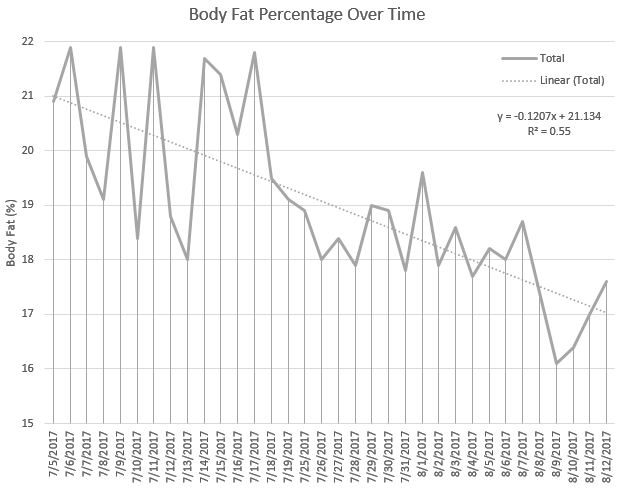
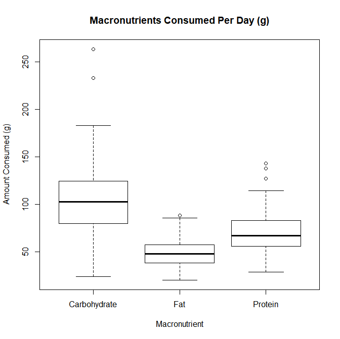

Draft: v1.0 | Posted: 8/15/2017 | Updated: 8/31/17 | confidence of success: 80% | estimated time to completion: July 2018 | importance: High
Optimizing Health with Cronometer
DISCLAIMER - I'm not a health expert, this is the result of a specific project that I did and should not be taken as a plan or as expert advice. Please don't hurt yourself!
Abstract
I take a data-driven approach to my health and find that it's a pretty straightforward task. I write an exhaustive post of all the things I've read/done in order to create a resource designed to demystify health, diet, and fitness. The goal is to demonstrate that managing your health is surprisingly quantifiable, predictable, and easy.
This document is very long (>5000 words), and a lot of it is not necessary to read. This is more like a big folder of my health notes, the basis for my decisions, my progress, and a rough tutorial. I've tried to structure it in a manner that makes it easier to read depending on your goals. If you're interested in how I approached weight management, you can read from "Intro" to "Some Concerns". If you're interested in how I approached getting fitter, you can read from "Aerobic Exercise and Resistance Training" until the end. If you're just interested in a data-driven, evidence-based approach to health, you can read the whole thing.
Intro
During my last year at University, I gained weight. I had recently come off of essentially solving a long-time sleeping problem (hooray for blood tests!) and wanted to take an extremely hard course schedule to make up for lost time. Swamped with work, I ended up skipping exercise and eating much more frequently, to the point where I ended up slowly making my way up from 145 lbs to 185 lbs.
Fast forward to a few weeks out from graduation, and I've become the heaviest I've ever been. Resolved to solve this thing I considered a problem, I did some reading (with google scholar searches). It's particularly difficult to find good science on human nutrition, since most of it seems to deal with fad diets and new products rather than simply finding the optimal path to weight loss.
Some papers that did interest me were the following:
The Role of Exercise and Physical Activity in Weight Loss and Maintenance (Swift et al. 2014)
- Unless volume of aerobic exercise is high, clinically significant weight loss is unlikely to occur through just exercise.
- Exercise plays an important role in preventing weight gain by raising energy expenditure
- Extremely dramatic results in several groups over a year
- Pedometer-based steps goal: 0-1kg lost
- Aerobic exercise: 0-2kg lost
- Resistance training: 0kg lost
- Aerobic and resistance training: 0-2kg lost
- Caloric Restriction and aerobic exercise training: 9-13kg lost (20-30lbs) (!)
- Studied Atkins, Zone, LEARN, and Ornish diet groups, all women
- After 8 weeks, a significant number in a few of the groups had shifted to deficient levels for some micronutrients
- Low-Carb diets were found to enable short-term weight loss, since they facilitated reduced energy intake, but the lack of long-term studies on them make them difficult to recommend
- "Successful weight loss occurs through the creation of a sustained energy deficit, and should be achieved through a combination of exercise and a nutritionally balanced and varied diet."
- "The caloric deficit attributable to replacing SCBs with water was not negated by compensatory increases in other food or beverages" which is pretty straightforward
- "Replacing all SCBs with drinking water was associated with a predicted mean decrease in total energy of 200 kcal/d over 12 months."
- Drinking water before meals generally leads to less food intake compared to not increasing water intake
- "Drinking water reduces sensations of hunger and increases satiety"
- (This study was done with self-reporting so I don't assign the strongest confidence with it, but the effect was a noticable +44% so I included it here)
Variability in energy expenditure and its components. (Donahoo et al. 2004)
- Variation in energy expenditure is 5-8% for BMR, 1-2% in exercise expenditure, and 20% from diet-induced thermogenesis, all very reproducible
- That is, 68% within 1840-2160kcal/day, 96% within 1680-2320kcal
- Less than 1% chance of comparing two people and finding them to have a 600kcal or higher difference in BMR; most people differ by roughly a single poptart.
- Ergo, variation in humans is largely due to variation in non-exercise activity (e.g. occupation, average time spent walking, whatever)
And then some of the more classic studies:
Calorie Intake In Relation to Body-weight Changes In The Obese (Kekwick & Pawan, 1956)
- Commonly cited paper used to argue for low-carb diets
- Obese individuals were placed on different macronutrient heavy diets: one 90% carbohydrate, one 90% protein, one 90% fat, each at 1000 calories
- Protein and Fat groups lost weight, carb group seemed to actually gain weight
- Wasn't actually three groups on different diets, was actually the same individuals doing each of these diets for around 1 week, with weight loss stalling during the carb-heavy week
- "The rate of... loss of water has been shown to rise with high-fat and high-protein diets and to fall with high-carbohydrate diets."
- "The rate of weight-loss has been shown to be proportional to the deficiency in calorie intake when the proportions of fat, carbohydrate, and protein in the diet are kept constant at each level of calorie restriction."
- Possible sources of error included patients having a tendency to lie and eat extra food (referred to as "inadequate personalities"), as well as women whose water retention varies with the menstural cycle
- Kind of flimsy experimental design if you ask me
The Biology of Human Starvation (Keys et al 1950)
- Famous study where participants were starved for 24 weeks, only eating relatively small amounts of carb-heavy foods to simulate wartime starvation (potatoes, bread)
- Participants also walked 22 miles a week and did physical labor work
- Weight loss was very stable with a consistent caloric deficit and would plateau after 24 weeks, whereupon the participants looked like actual skeletons
- A bunch of horrible psychological and physiological effects on the participants was found after starving them for 24 weeks
- Not super sure why this is so frequently cited with regards to healthy dieting, aside from the "plateaus will go away if you keep going" implication, and the fact that slowing metabolism happens roughly quadratically, with a true plateau at 24 weeks
- Please don't starve yourselves for 24 weeks
{kind=link}
Impressions
- Fad diets generally seem to work by "tricking" you into eating fewer calories by eliminating calorically-dense foods, with some of the carb-restrictive ones offering an encouraging boost at the beginning that comes with reduced water retention.
- There's nothing "inherently" dangerous about most foods restricted in these diets, merely the amount of them that you eat relative to other foods.
- Fad diets can encourage short-term weight loss but if you "finish" them and go back to normal you'll probably just gain weight again.
- Fad diets can cause nutrient deficiencies, at least if done improperly.
- The "solution" all of these diets seem to be hinting at is just caloric restriction. Intermittent Fasting plays upon this by only letting you eat in short windows (and hopefully less overall), low-carb plays upon this by removing stuff like bread which has lots of calories, etc etc.
- Most people don't have vastly differing metabolisms, overwhelming odds suggesting I am not "predisposed" to losing or gaining weight.
- Exercise doesn't necessarily make you lose weight (!), eating less does.
- Exercise obviously has other benefits and you should still do it, this is more to say "diet is what is important with regards to weight".
- Drinking only water is a really easy way to get a free ~200kcal/d off your diet, if you drink sweet beverages often.
- Drinking water might make you feel more full, so drinking a lot of water could make the sensation of being hungry much less salient. Good hydration is obviously important for other reasons as well, like short-term memory and visuomotor tracking.
- To lose weight in the most consistent way, you should measure your caloric intake and eat a consistent amount of food every day.
ENTER CRONOMETER
Cronometer is a website that allows you to track your meals, your nutrient intake, your exercise, and your weight. You can export your data to CSVs, you can ask it to send email reminders at set times everyday, and you can adjust pretty much any parameters you want. I started tracking all of my meals on May 26th 2017 (although I had been going through C25K beforehand and had already lost some weight). When I started, I was at around 175 lbs and began with a moderately gentle -500 caloric deficit, although I later dropped it to around -1000. I used mostly the default values for every category, and tried my best to make everything green (i.e. get enough of every macro and micronutrient, every day, while maintaining a caloric deficit and a reasonably consistent macronutrient ratio). I weighed myself every morning as soon as I woke up, at around the same time each day. I started out extremely manic about my intake (measuring food with a scale to ensure I wasn't over or underreporting) but as time went on I grew better at estimating how much food I was eating (mostly by weight and portion control). In general, I ate anything I felt like eating, provided I had enough calories left in the day to eat it. Their iphone app costs $3 (and to be honest kind of sucks, frequently crashes and doesn't load) but you can use the webapp for free and suffer through their mobile site on chrome if you don't want to spend the money.
I actually didn't know there were other biometrics that weren't weight until 6/27/17, which was 32 days into this process (and -11 pounds). From then on I started tracking mood (measured in "milligiggles") and sleep, mostly in hopes of getting good data that I could use in the future. Tracking all these gives me a wide range of variables that I could use for fun projects in the future (Am I happier when my calorie intake is higher? Am I more likely to go running on days where the weather is nice? Do I sleep more when there's low barometric pressure? Am I happier on days where I run? The possibilities are finite but reasonably interesting, and gwern did a similar project where he found that weather had no effect on his mood or productivity). On top of that, I bought an omron scale which I started using on July 5th, 2017. This was half because I felt I ought to own my own scale (I had been using my family's) and because it would allow me to track body fat percentage, skeletal muscle, and visceral fat. It was also pretty fun to mess around with the data points and see their accuracy (Is there correlation between amount of water drank vs bodyfat % measurement? No. How much does my weight fluctuate throughout a normal day? Around 2.5lbs. Is visceral fat or skeletal muscle useful to measure? Remains to be seen.)
Thoughts
The immediate thing I noticed was that I wasn't drinking nearly enough water. Cronometer suggests you drink 3700g/day (~125oz, about a gallon), and I started out drinking about a quarter of that. In terms of noticable day-to-day changes, this was probably the biggest one, as I ended up needing to finish my water bottle around 4 times per day in addition to drinking water with meals, but once I got used to it it wasn't so bad.
It's pretty hard to get all the micronutrients you need from so few calories. I ended up relying pretty heavily on a multivitamin for some of the weaker parts of my micronutrient intake. I tended to hover around 20-50% on almost everything, but thankfully the multivitamin I used, along with the vitamin D that I take, brought almost everything to a reasonable level. Something cool that I found myself doing is adjusting my meals as I went along - I would think something like "oh, I don't have enough protein today" and would eat some protein-rich foods for my next meal. If I had calories left over, I would have a snack. If I ate a small breakfast, I'd eat a bigger dinner.
The biggest exceptions I realized I consistently didn't get from my diet or my vitamins were omega-3, magnesium, fiber, and potassium. The former three were easy fixes, but potassium was tricky. You can't really get supplements for potassium consuming just potassium, since in its elemental form it can apparently be sort of dangerous. Ergo, the FDA limits sale of supplements to 100mg, which is hardly any of the required daily limit (4700mg). I thought I'd just add a banana or so but it turns out the RDA is equivalent to around 10 bananas a day, which to me just seems extreme. I'm still working on a sustainable solution to this one since I'm not sure I want to use salt substitutes - I might just not worry too much about it unless I get a blood test that I'm not happy with.
Another thing I noticed after some while was how fluctuating my weight was from day-to-day, and how my weight seemed to change consistently sometimes and in big waves other times. Something I've seen other apps do for this is keep a running average of your weight, which is significantly more consistent - in general I needed to trust the process sometimes ("there's literally no way I'm maintaining this weight at ~1200 calories per day") and it would eventually just go down.
Results
May 2017 - August 2017
I hit my weight goal of 150 pounds (that is, the trendline reaching 150, not "having one measurement under 50") on August 8, 2017. I lost 25 pounds in 75 days (~2.5 months), which comes out to exactly 1/3 a pound per day, or 2.33 pounds per week. I maintained for a few weeks afterwards (not pictured) and continued to lose weight for a short while as I found it difficult to eat that much, but I eventually adjusted and am currently maintaining at a bit under 150. This made for almost 40 pounds lost (!) from my heaviest point a few months ago, 25 of which was done in this 2.5 month window.

I was particularly impressed with how close an approximation -1000 was to losing 2 pounds per week. Fitted with a linear approximation, the projection comes out to around y = -0.34x+173, which is around -2.3 pounds per week, almost exactly perfect. The R-squared value comes out to 0.98 which is about as close of a fit as you can reasonably expect given inherent random noise in day-to-day measurements. I've heard a lot of people criticize the "Calories in, Calories out" model as "not working." I've read criticisms like "eating less makes us want to eat more and do less... [it doesn't] work as a solution." While I am only a single data point, these claims strike me as extremely questionable. I maintained a certain food intake, I ran 3 times a week, and for the most part just sat around and did nothing active all day (mostly working on projects, playing SSBM, looking for work, or watching anime). My metabolism didn't slow down in any meaningful way, and my weight dropped roughly 2 pounds each week on average, like clockwork.
Bodyfat loss was much the same, although it was a bit more manic and less tight to the fit due to the high variability of the measurement

Of course, I've only done this in one direction (that is, down at 2 lbs/week). I'll have to try maintaining at +/- 0 for a while (It's possible I'm actually eating at -1500, and my BMR is higher than I've calculated) as well as gaining weight at a steady speed (Ideally through healthy resistance training, and not just by getting fat for this project). As it stands, though, my "experts who criticize calorie count methods are trying to sell you something" estimation sits at a comfortable 70%, considering that I've never lost this much weight before and I was so consistently able to lose weight this way.
My Macronutrient composition was pretty fairly balanced, although it typically had some variability to it. Visualized here with a boxplot made in R:

You'll see I usually ate somewhere around 100g carbs, 50g fat, and 70g protein - compare to RDA 130g carbs, 65g fat, 56g protein. I didn't "accidentally" conform to a low-carb diet or something of the like, although my diet ended up being slightly slanted down for fat/carbs and slanted up for protein (and potentially why I didn't have satiety issues). Notable is just how large the IQR is for all of these - My diet was very inconsistent macronutrient-wise, and I doubt any strong conclusions can be pulled from my weightloss with respect to what exactly I ate.
Overall this approach to weight management was very successful and easy, and I struggle to imagine any sort of significant improvement upon it. It's possible that there are ways to adjust your macronutrients to feel more satiated, and it's possible that specific diets have boons of their own (i.e. ketosis reducing brain fog, or something), but if you're just interested in something quantifiable "Track your intake, eat 500-1000 fewer calories, if you eat 'healthier' foods you usually get to eat more, exercise is good too" is more than enough diet advice for anyone.
Some Concerns
"But aren't you hungry all the time?"
Yes! I was moderately hungry for a good portion of the day most days. I never felt like I was starving or lightheaded, I just felt slightly hungry and simply didn't eat any more. It required some discipline, but significantly less than pretty much any other project I've ever done. I think, for the most part, the difficulty of this part is vastly overstated. I never took anything like Ephedrine or Dinitrophenol, not because they weren't shown to be statistically significant (Ephedrine has, see Shekelle et al 2003) but simply because I didn't really feel it to be all that necessary - I was never so hungry that I couldn't just wait until my next meal, and the whole exercise felt like a giant marshmallow test (see Mishel et al 1972). I took caffeine semi-often, when I wanted to feel more awake, and while this does slightly affect metabolic rate the effect is slight enough that I considered it mostly negligible.
That said, I think a big caveat was the fact that I only ever felt mildly hungry - if you're in pain then it's likely that you're underreporting your energy intake, you're underestimating your base metabolic rate, or you're deficient in something important (or multiple of these). A funny story comes from someone that I convinced to do this with me, who had been complaining about being excruciatingly hungry. When I looked in their diary I saw that they were registering half-slices of bread as 100g (or about 4 slices of bread), and all their weights were similarly huge, leading them to believe they were eating 1500 calories when they were really eating closer to 800-900. Measuring things with a food scale is pretty important, especially near the beginning! I think a good, safe strategy is to track your "normal" intake first, see if that's gain/lose/maintain, and adjust over time from there. There's no need to rush into things, especially if you're trying to lose a larger amount of weight.
"Didn't you go a bit too fast?"
I was curious about the limits of caloric restriction, so I tried to push in a reasonably aggressive way, aiming to drop ~2 pounds per week. A possible worry about going this fast is rebounding, which is common in people that lose large amounts of weight in short periods of time, then decide they're "done dieting" and resume their old eating habits that caused them to gain so much weight in the first place. The nice thing about quantifying your intake is that you can practice not eating too much. I can simply stop eating at a deficit and continue tracking my meals, and if I feel the need to stop tracking my meals I can do so knowing how much food I can comfortably eat without gaining weight.
"Isn't that really inconvenient?"
I use RescueTime to track how much time I'm spending on certain websites, and entered almost everything on Cronometer from my computer unless I was travelling. RescueTime tells me I spend a whopping 6-8 minutes on cronometer on the average days, so I don't consider it a huge amount of effort (less even than meditation, which I've been doing 10 minutes a day).
"Did you exercise a ton?"
I tried to get into a running habit just before starting this, and after reading Swift et al decided it would be a pretty good idea to keep going. I ran roughly 3 times a week for about 30 minutes each time, and was not that disciplined about it (I would sometimes take extra rest days because I just didn't feel like running, especially near the beginning, but got better about it as time went on). On almost every single day that I did run, I ate more food, so my deficit remained at a very consistent 1000 even with the running.
References and Further Discussion on Resistance training to Come: expect an update around Late October?
posted on 8/31/17Back to Top